[Картинки] [Иллюстрации]
Иллюстрации к песням.
Быстров
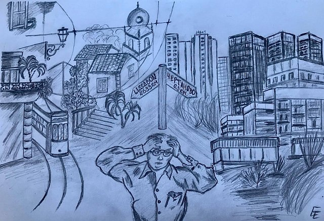
Иллюстрация Елены Ерофеевой из книги "Детали и дали" (2020).
Восточная песня 1
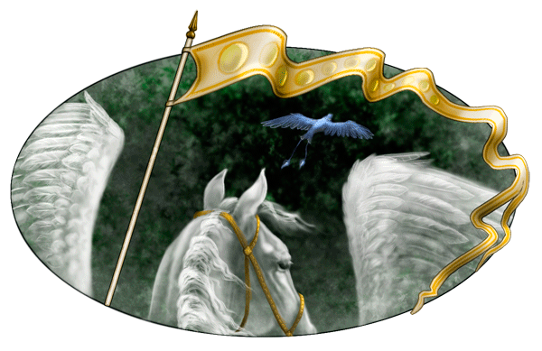
Если
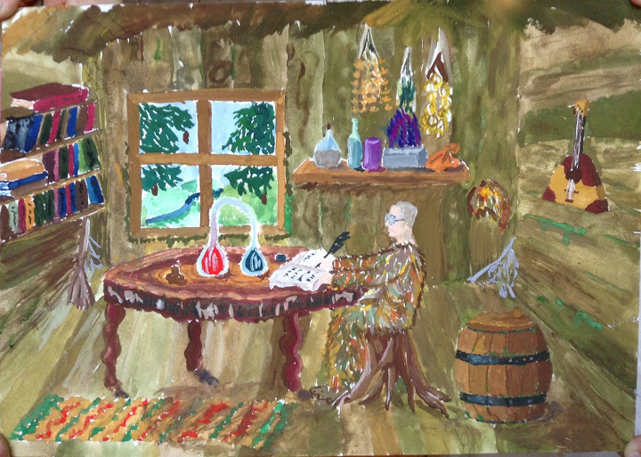
Катя, 12 лет, Леший (оригинал в ЖЖ).
Караван
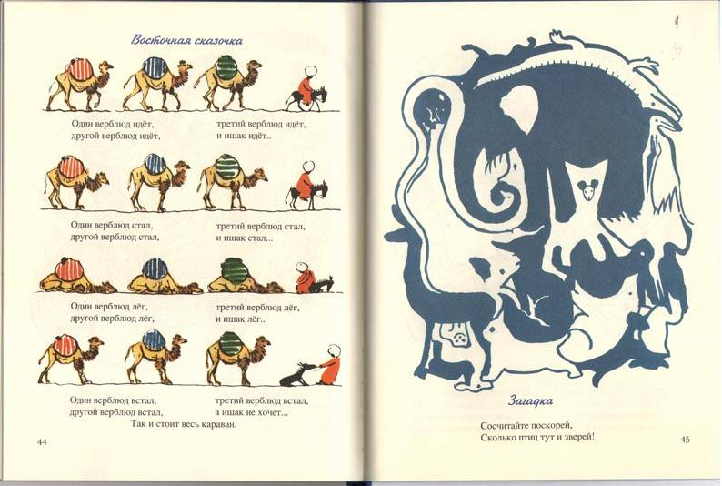
оригинал в ЖЖ.
East coast
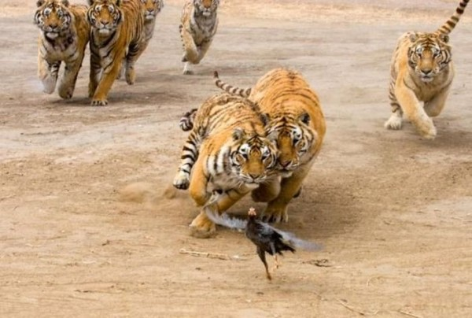
источник в ЖЖ.
Волхонка
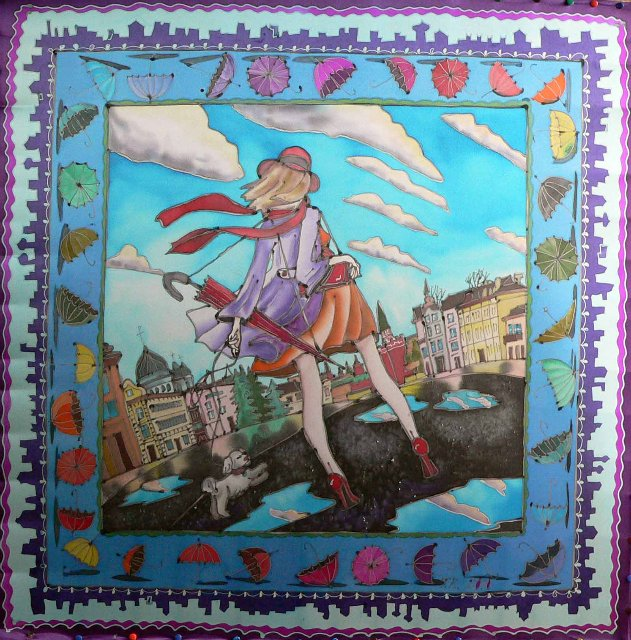
оригинал в ЖЖ.
Есть дамы, которые славятся чутким скелетом
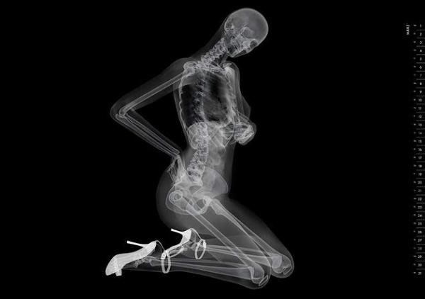
Картинка из настенного календаря.
Обнаружил Антон Лучанский.
Работы zaglyanula
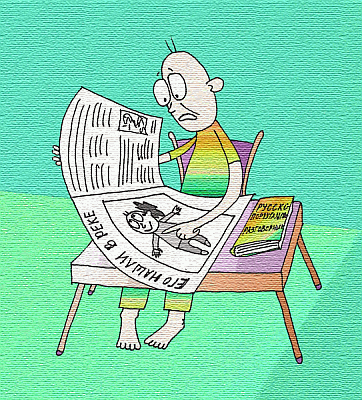
Быстров (оригинал здесь)
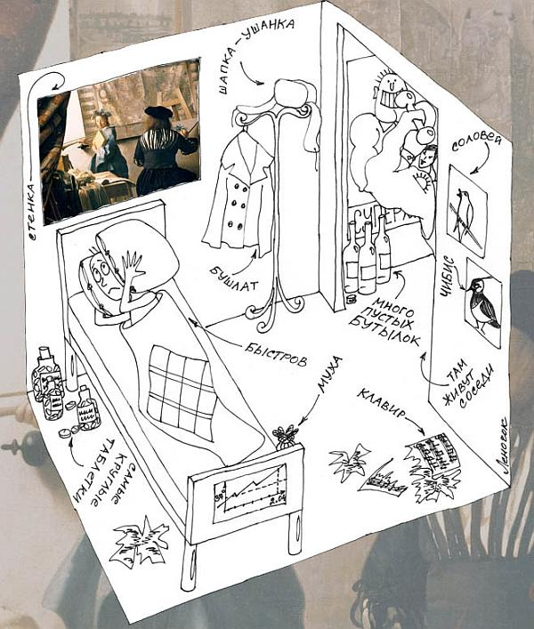
Быстров: история болезни, том четвёртый, или Как он дошёл до жизни такой (оригинал здесь)
Работа ackat (оригинал здесь)
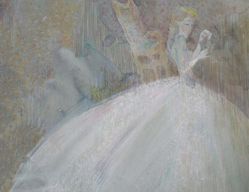
"Один мой брат решил стать моряком,
И бороздить морские параллели,
Другой увлекся карточным столом,
А я в любви признался королеве"
Работа Тани Каган, год приблизительно 1988
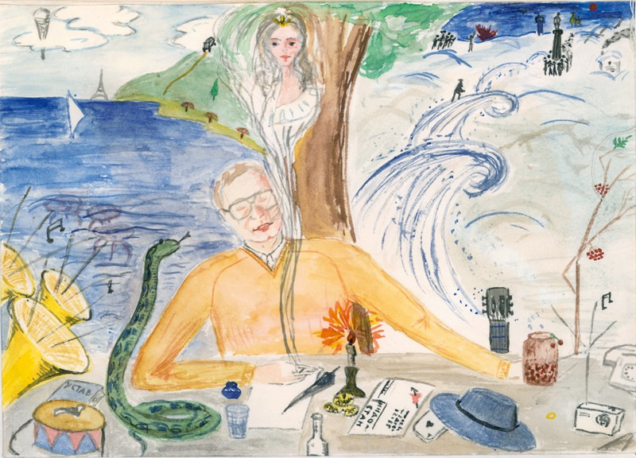
"Музыка в Тюильри" - картина Эдуарда Мане
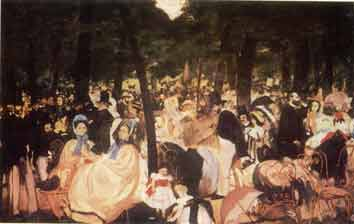
Парабола Лобачевского - образ из "Песенки о молодости".
Рисунок Володи Смирнова.
См. также его комментарий.
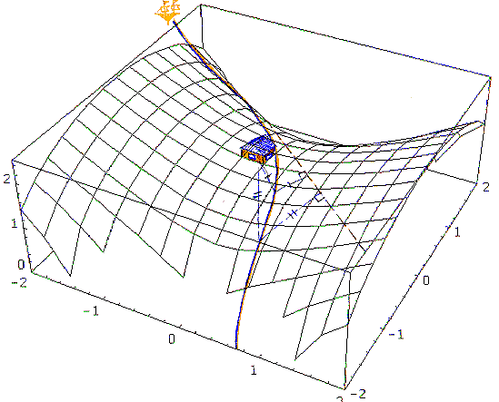
Деталь картины Иеронима Босха "Страшный Суд"
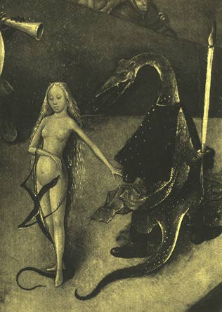
"Ночной дозор", картина Рембрандта
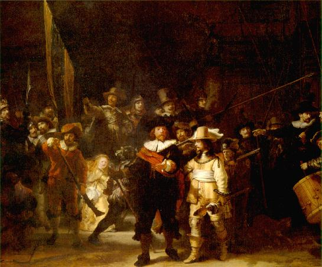
Витраж в Большой Синагоге в Иерусалиме,
который "не имелся в виду" Щербаковым в песне "Волк"
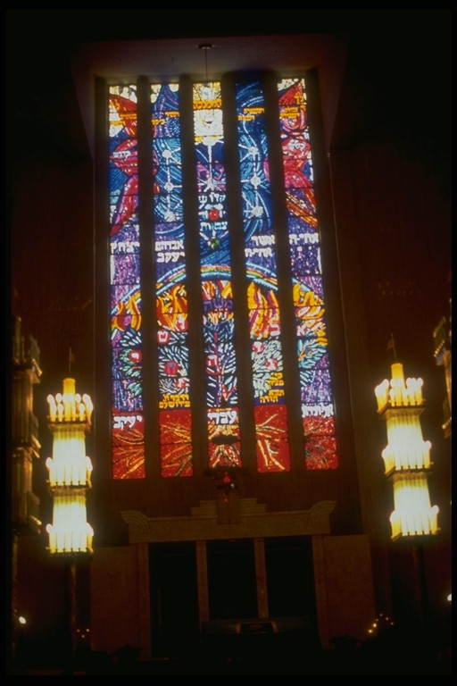
[Иллюстрации]
[Наверх]